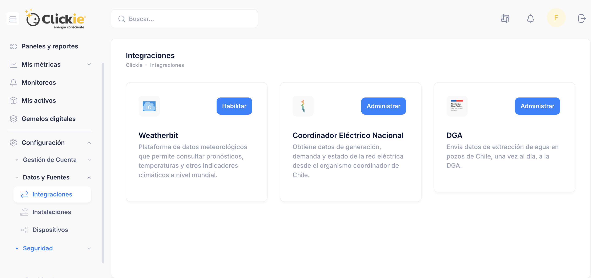
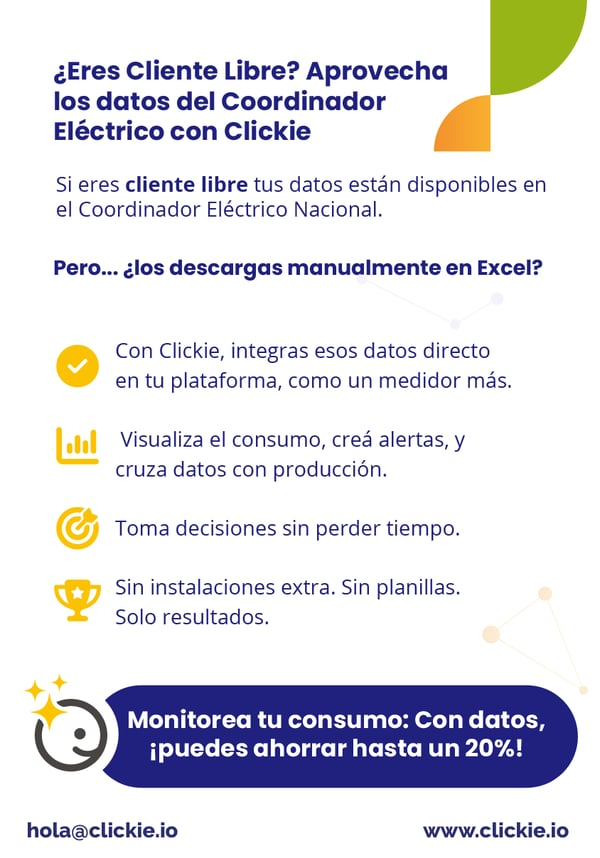

Si tu empresa opera como Cliente Libre, ya cuenta con una fuente de datos muy valiosa: las lecturas que se reportan al Coordinador Eléctrico Nacional. El problema suele venir después, cuando esa información termina dispersa en archivos, revisiones manuales y planillas difíciles de cruzar.
La buena noticia es que esa integración puede resolverse sin instalaciones adicionales. Si tus datos ya están disponibles en el Coordinador, Clickie puede conectarse directamente y convertirlos en parte activa de tu gestión energética.
Qué cambia cuando integras esos datos
En vez de descargar archivos y revisarlos por separado, la información entra a la plataforma como un medidor más. Eso permite:
- Visualizar el consumo en un solo lugar. Tus lecturas se integran al resto de la operación, sin depender de revisiones manuales.
- Configurar alertas. Los datos dejan de ser un registro pasivo y empiezan a generar señales útiles para actuar a tiempo.
- Cruzar consumo con otras variables. Producción, metas energéticas o comportamiento por período pueden leerse con más contexto.
- Tomar decisiones más rápidas. La energía deja de verse solo al cierre y empieza a gestionarse durante la operación.

Por qué esto importa
Cuando la información energética ya existe, el mayor desperdicio suele ser no usarla bien. Integrarla automáticamente reduce fricción operativa y acelera decisiones que antes quedaban postergadas por trabajo manual o falta de visibilidad.
Además, tener los datos del Coordinador dentro de la misma plataforma facilita construir una lectura más completa del consumo y del desempeño energético del negocio.

En Clickie ayudamos a simplificar ese proceso para que la información energética se convierta en acciones concretas, no en archivos acumulados.
Conoce cómo integrar tus datos energéticos o escríbenos a hola@clickie.io.